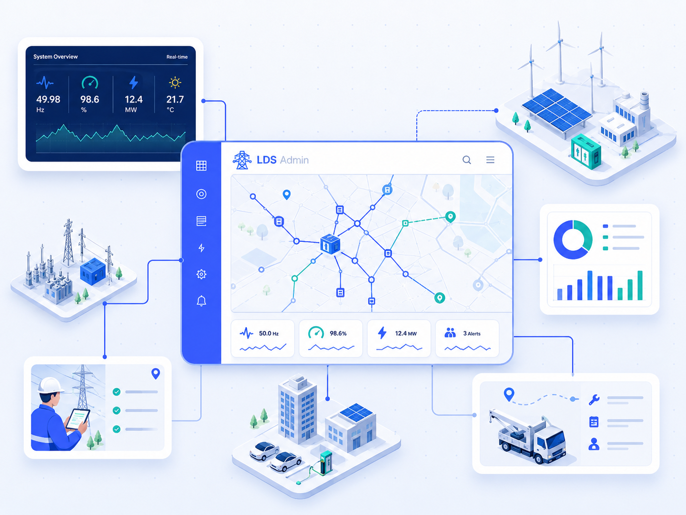
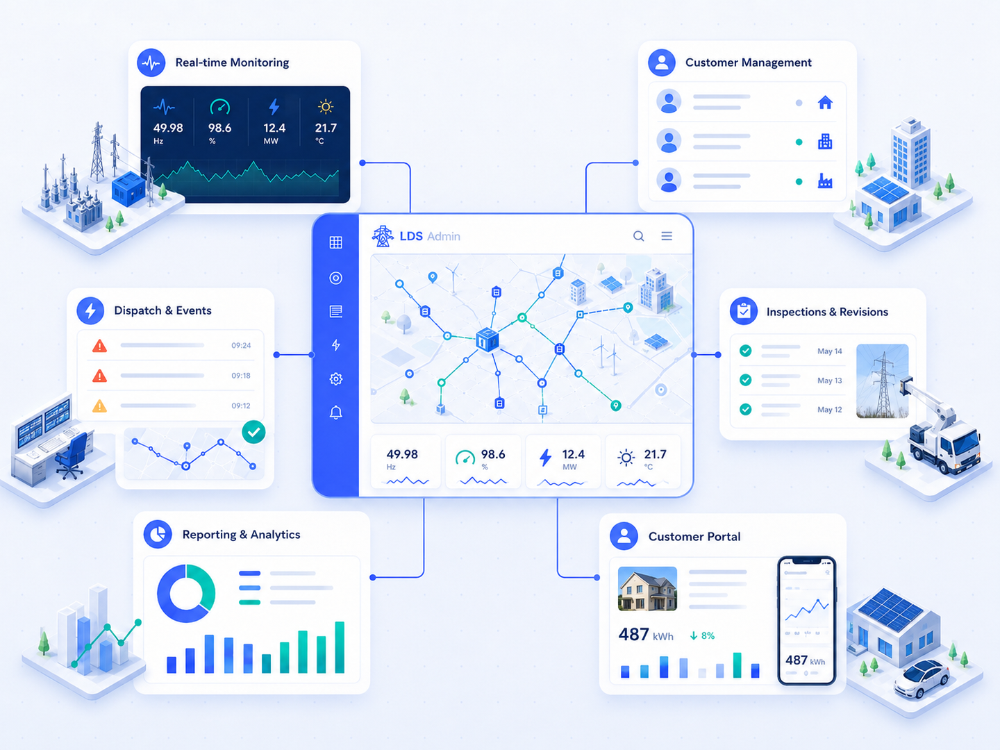

Provozní přehled
Monitoring odběrných míst, stav zařízení a události v jednom pohledu.
LDS Admin propojuje veřejnou prezentaci produktu s reálnou administrací pro lokální distribuční sítě, odběrná místa, měření, revize a zákaznickou komunikaci.

Platforma pomáhá týmům rychle pochopit stav sítě, dohledat technické souvislosti a pracovat se stejnými daty bez zbytečného přepínání mezi nástroji.

Monitoring odběrných míst, stav zařízení a události v jednom pohledu.
GIS evidence, dokumentace a historie zásahů přímo u prvků infrastruktury.
Rychlejší vyhodnocení abnormalit, priorit a odpovědnosti při řešení událostí.
Kontakty, smlouvy, dokumenty a informace pro efektivnější komunikaci s odběrateli.
Napojení měření, Mervis, SCADA, API a datových bran podle projektového rozsahu.
Veřejný web zůstává prezentační, administrace běží samostatně na main.ldsadmin.cz.
Domluvte si ukázku a zjistěte, jak platforma zapadne do vaší energetické infrastruktury.